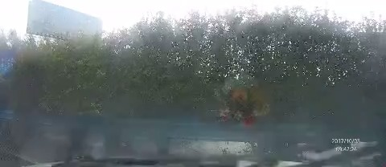
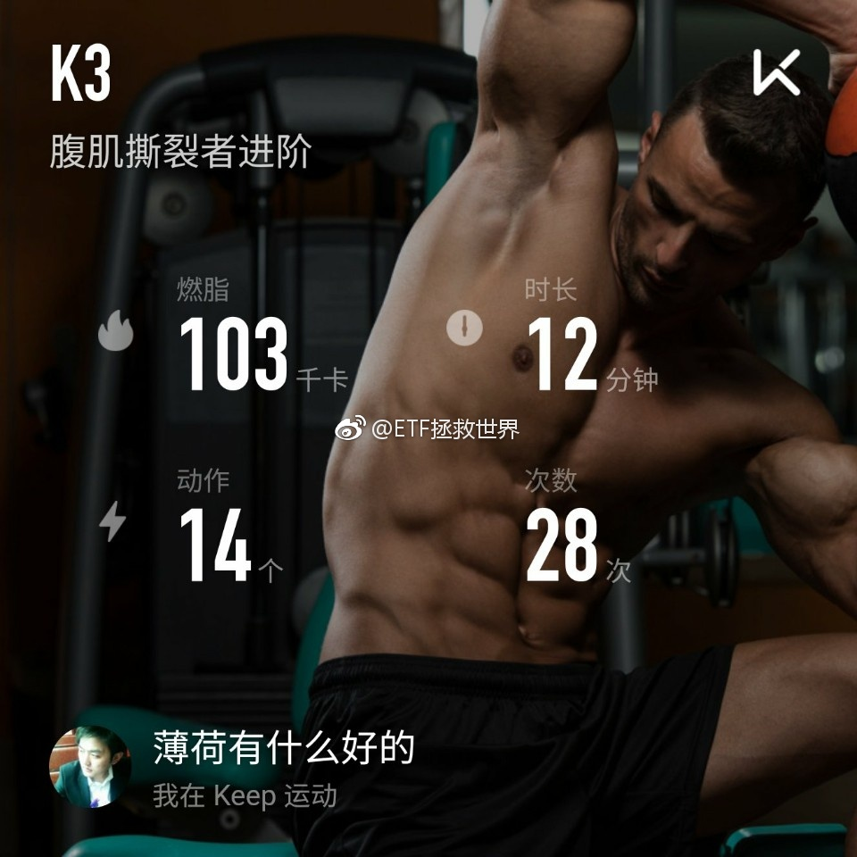
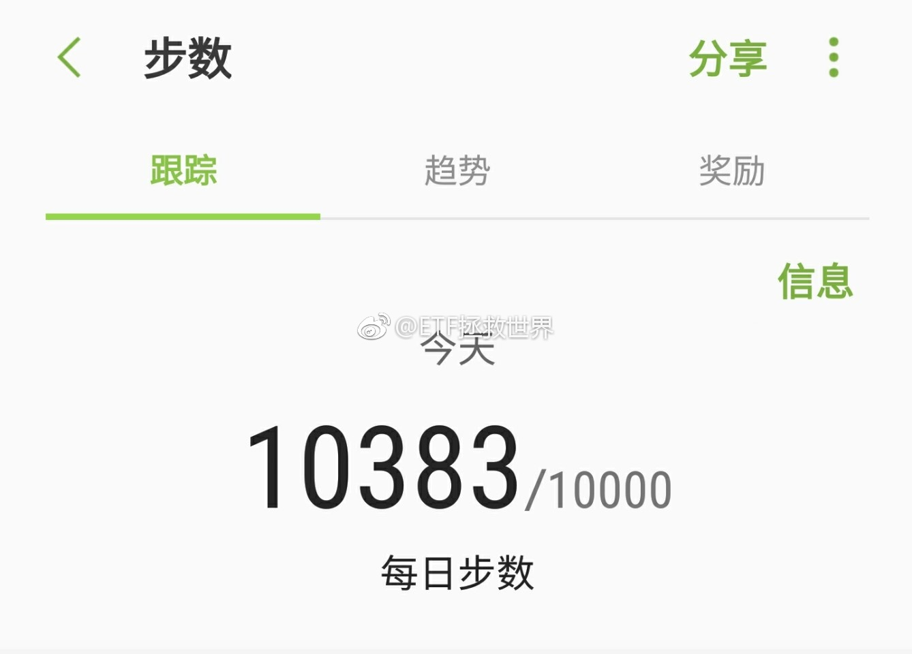

为什么这样的人可以上路，为什么？！@新浪视频:【高速路逆行引四车连环撞 女司机哀叹要赔三辆车】3日，沪渝高速荆州段，一名女子驾车在高速路上调头逆行，导致四车连环相撞。行车记录仪显示，女驾驶员一直在说逆行是不对的，但为图一时方便还是冒险操作，事发后女子惊呼“完了，完了 ，我要赔三辆车”。高速路逆行引四车连环撞 女司机哀叹要赔三辆车  279万次播放 01:26
每日打卡（88）各位中秋快乐！给逮嘎拜个晚年！祝逮嘎年年有今日，岁岁有今朝！今天大家是在外面浪还是在家里浪？哪里浪都好，开心最重要……没法一一回复各位，心意都感受到了……除了每天一万步，要不要加个每天n分钟平板支撑？不过不想给自己太大压力…… 
 高速路逆行引四车连环撞 女司机哀叹要赔三辆车
高速路逆行引四车连环撞 女司机哀叹要赔三辆车